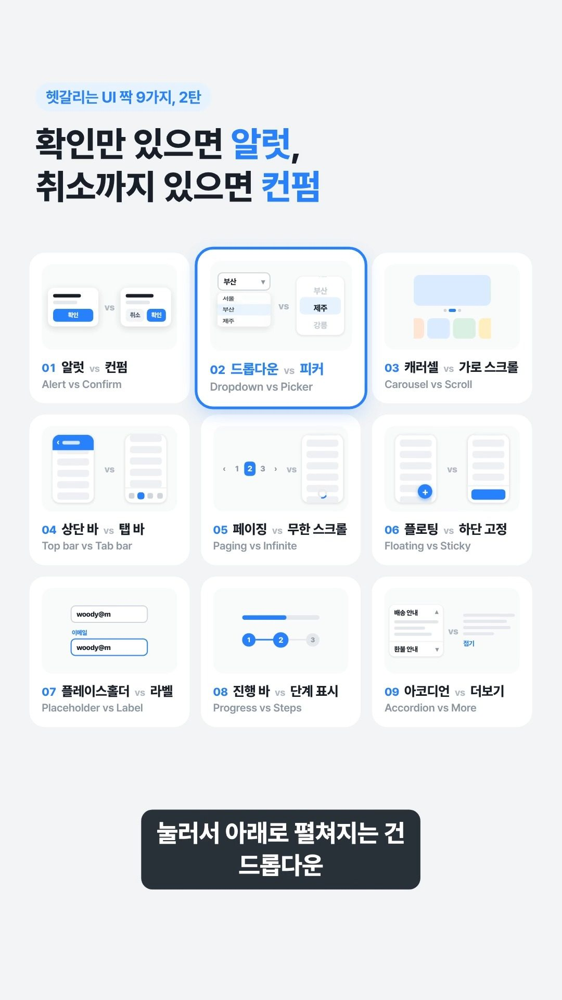

테크 · 릴스 · 2026-11-23
헷갈리는 UI 요소 짝 9가지와 정확한 이름
비슷해 보이지만 이름이 다른 UI 요소 9쌍(알럿·컨펌, 드롭다운·피커 등)을 구분해 정리하고, AI에게 디자인을 요청할 때 이 이름을 쓰라고 권한다.

- 확인 버튼만 있는 창은 알럿(Alert), 취소 버튼까지 있으면 컨펌(Confirm)이다.
- 눌러서 목록이 아래로 펼쳐지면 드롭다운(Dropdown), 아래에서 올라와 돌려서 고르면 피커(Picker)다.
- 입력 칸에 흐리게 쓰여 있다가 입력하면 사라지는 글씨는 플레이스홀더(Placeholder), 입력해도 위에 남는 이름은 라벨(Label)이다.
- 화면 위에 동그랗게 떠 있는 버튼은 플로팅 버튼, 맨 아래에 붙어 있는 버튼은 하단 고정 버튼이다.
- 한 장씩 넘기는 배너는 캐러셀, 옆으로 밀어 보는 목록은 가로 스크롤이며, 맨 위 제목 영역은 상단 바, 맨 아래 메뉴 묶음은 탭 바다.
- 쪽 번호로 넘기면 페이징, 끝없이 이어지면 무한 스크롤이고, 진척을 막대로 보여 주면 진행 바, 단계를 점으로 보여 주면 단계 표시다.
- 접었다 펴는 목록은 아코디언, 눌러서 이어 보는 방식은 더보기이며, AI에게는 '버튼 예쁘게' 대신 이런 이름으로 요청하라고 권한다.